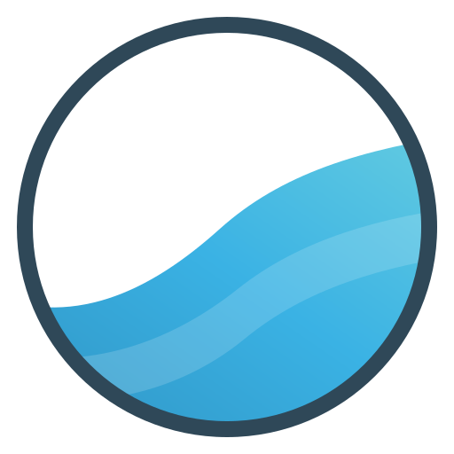
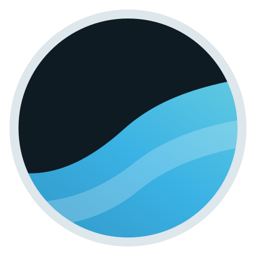

R5 · a wave-in-a-hexagon mark, and a yellow for the light theme
The mark at every size it is used — today's (left of each tile) vs the candidate
on navy (dark theme, top bar)
16
32
64
Marine
Sensitivity Atlas

today
on white (light theme, print)
16
32
64
Marine
Sensitivity Atlas

todayReport header — the seal stays (D10, ≥ 72 px on its white plate); the mark sits beside it
 St. George Basin · place report
St. George Basin · place reportMarine Sensitivity Atlas · release v7 · Marine Minerals Administration
The light (paper) theme with each candidate token set — top bar · active rail button · active lens · selected place · switch · PREVIEW chip
current · Steel
passes today (production tokens.css)
--mma-steel accent, slate chromepasses today (production tokens.css)
y1 · brand gold fill + navy ringrecommended
fill 1.49:1 (exempt) · ring 14.2:1 · navy text 9.53:1 · needs component edits
fill 1.49:1 (exempt) · ring 14.2:1 · navy text 9.53:1 · needs component edits
y2 · brand-hue gold, the lightest that passes
fill 3.07:1 · navy text 4.63:1 (white fails) · needs
fill 3.07:1 · navy text 4.63:1 (white fails) · needs
--text-on-cat
y3 · deep ochre (brand hue)drop-in fallback
fill 4.61:1 · white text 5.29:1 · drop-in, no component edits
fill 4.61:1 · white text 5.29:1 · drop-in, no component edits
navy (dark theme, unchanged) · for coordination